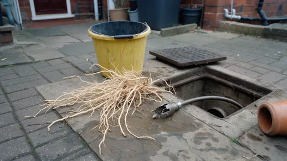

What a survey is
A small camera on a push rod, or a crawler for anything over about 150mm, goes in at a chamber and travels along the pipe while we watch the picture. We note what we pass and how far along it is, so a crack at nine metres can be found again by somebody with a spade.
When one is worth it
Four times, mainly. When a drain keeps blocking and nobody has looked at why. When you are buying a house, particularly an older one with clay pipe and mature trees. When a path, a wall or a patio is sinking near the run. And before anybody digs, because a trench in the wrong place costs more than the survey did.
It is not worth it for a one off blockage that clears, runs clean and stays clear. We will tell you that rather than sell you one.
What it shows
Cracks and fractures. Open or displaced joints, where two lengths have pulled apart and the ground is washing in. Roots, which come in as a fine beard through a hairline crack and end up filling the pipe. A belly, where the ground under a length has settled and water now stands in it instead of running. Scale and fat on the pipe wall. And the odd thing nobody expects, like a pipe that was cut through for a fence post years ago.
What you get after
The footage, stills of anything worth seeing, and a short written summary that says what we found, where it is, whether it needs doing now or just watching, and which of it sits on your side of the boundary. No jargon that only means something to another drainage firm.
 Survey 9.4m · sampleGenerated photo
Survey 9.4m · sampleGenerated photoGenerated for this demo. Not a photograph of a real job.
On the day
How this one usually goes.
- Covers up and a flush throughA quick flush so we are looking at a pipe in use rather than a dry one, and so the camera can see where water actually goes.
- Camera in at the chamberIn at the nearest chamber and along the run, with the distance recorded as we go so anything we find can be found again.
- Note every defect with a distanceA crack at nine metres, an open joint at fourteen. Distances are what turn footage into a repair somebody can price.
- Show you the screen there and thenYou see it live while we are on site, not a fortnight later in an email. Questions are easier to answer with the camera still in.
- Footage, stills and a plain reportWhat we found, where, whether it needs doing, and whose side of the boundary it sits on.
A sample running order for this demo. Yours depends on what is under the covers.
Questions
Asked about this job.
How long does a survey take?
An ordinary house with two or three chambers is usually an hour or two on site, depending on how much is there to look at and whether the run needs clearing first.
If it is blocked we have to clear it before the camera can go anywhere, so that gets done first and the survey follows on behind it.
Can you survey a drain that is blocked?
Not properly, no. A camera in standing water shows you standing water. We clear the run first, then survey it, which has the advantage of showing you the pipe in the state it will be in from now on.
Is a survey worth it before I buy a house?
On an older property with clay pipe and big trees nearby, we would say yes. It is a small amount of money against the cost of a collapsed run under a drive, and it is the kind of thing that is much easier to raise before contracts than after.
Either way you get footage, which is a lot more use in a conversation with a seller than an opinion.
Will the report be something I can actually use?
That is the idea. It says what we found, where along the run it is, whether it wants doing now or just keeping an eye on, and whether it is on your side of the boundary.
People do send them on to insurers and to water companies. Whether either of them pays for anything is between you and them, and we are not going to pretend otherwise.
General trade knowledge written for this demo, not advice on your drain.
Our work
Sample jobs like this.
 Generated photoCamera before anything elseSt Helens · sample
Generated photoCamera before anything elseSt Helens · sample Generated photoHow it should lookPrescot · sample
Generated photoHow it should lookPrescot · sample
Generated photoWhat came out of the pipeFormby · sample Generated photoShared run clearedSt Helens · sample
Generated photoShared run clearedSt Helens · sampleMade up samples with generated pictures. Tap one for the detail.
Also
The other things we do.
Blocked drains and toilets
Rodded, jetted and running again, then a look down it to see what caused it. Most of what we pull out is wipes, fat or roots.
More →Drain repairs and relining
Cracks, open joints and roots put right from inside the pipe where we can, with a patch or a liner cured in place.
More →Soakaways and land drainage
Rainwater taken away from the house and the lawn. We test what the ground actually does before anybody prices the dig.
More →Gully and gutter outlet clearing
The silt out of the gully pot and the outlet flushed through, so the downpipe stops running down the wall.
More →Septic tank and cesspit help
The drainage side of it: the runs in and out, the chambers and the condition of the pipework. Emptying is a tanker job.
More →Shall we come and look?
Tell us what it is doing and your postcode and we will book someone in. If waste water is coming up now, use the urgent line instead.